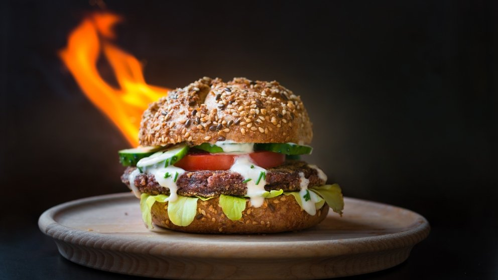

Hamburguesa Casera

Ingredientes
- 400 gramos de carne de ternera picada
- 4 panes hamburguesa con ajonjolí
- 1 yema de huevo
- 1 cucharadita de mostaza Dijon
- 1 cucharadita de salsa inglesa
- 1 lechuga fresca
- 2 tomates maduros
- Sal y pimienta a gusto
Como preparar la receta de hamburguesa americana de ternera:
- Limpiar bien todas las verduras. Cortar la cebolla en julianas y el tomate y pepinillo en rodajas. Reservar.
- Colocar la carne previamente descongelada en un recipiente amplio.
- Añadir la cucharadita de mostaza Dijon, la salsa inglesa, la yema de huevo, una pizca de sal y pimienta al gusto. Mezclar bien con una cuchara, hasta unir todos los ingredientes y formar una pasta suave.
- Dividir la carne en cuatro partes iguales y dar forma de hamburguesa.
- alentar una sartén y engrasar con un chorrito de aceite de girasol. Empezar a dorar las hamburguesas a fuego medio por ambos lados. Retirar cuando estén doradas y tengan el término deseado.
- En una sartén aparte, colocar las lonchas de beicon y cubrir con 1 cm de agua. Cocinar a fuego medio hasta que el agua se consuma por completo, dorando cada lado. Retirar y reservar cuando estén crujientes.
- Cortar los panes de hamburguesa en dos partes iguales. Colocar la carne en uno de los lados, distribuyendo el queso cheddar y las tiras de beicon encima.
- Decorar con hojas de lechuga, rodajas de tomate, aros de cebolla, pepinillo, salsa kétchup, mayonesa y mostaza a gusto.
- Cerrar las hamburguesas y servir caliente.